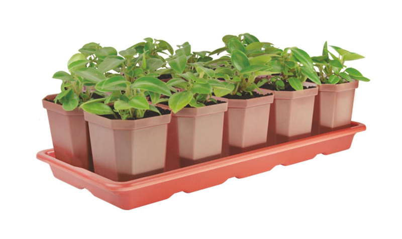
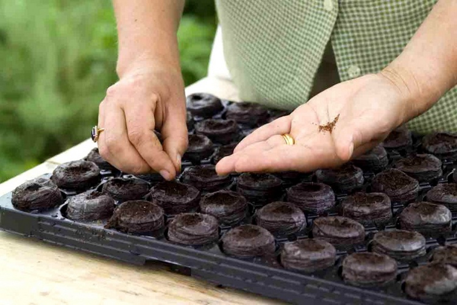
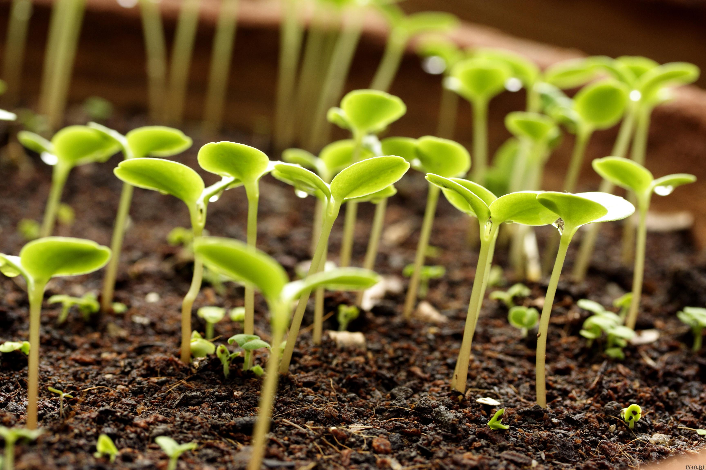

Каталог
Рассада дома – это просто!
Итак, вы решили: выращиваем рассаду в домашних условиях, а точнее – на подоконнике. Это не трудно, если следовать определенным рекомендациям. Вначале определяемся, что именно хотим получить и сколько. Иногда случается, что высаживается определенная рассада в январе, а следующим растениям, которые следует сеять в феврале-марте, уже нет места.
Условия выращивания рассады:
• Подоконник должен быть утеплен, с хорошим освещением. Вам обязательно потребуются лампы для рассады, не обязательно нужно покупать дорогие, специальные фитолампы, подойдут и простые светодиодные образцы.
• Необходимо несколько емкостей с отверстиями для дренажа, земляной субстрат хорошего качества, удобрения и семена.
• Если хотите вырастить рассаду качественную, то стоит выбрать самый светлый подоконник в доме. Южная сторона – в приоритете, но и западная с восточной также отлично подойдут.
Некоторые огородники начинают сеять рассаду в январе – сразу после всех январских праздников, а это во многих регионах время максимальных морозов. Нужно утепление, так как сквозняки станут большой проблемой, из-за которой чаще всего и погибает рассада у новичков.
Если в вашей квартире или доме деревянные окна, то набейте по периметру рамы утеплитель. Хорошо на подоконниках (не на стекле окна) иметь градусники, чтобы понимать, какая температура в месте, где идет выращивание рассады.
Больше информации о том, как оборудовать огород на подоконнике, читайте другие наши статьи. Вы не только узнаете, как подготовить место под рассаду, но и научитесь выращивать овощи зимой в домашних условиях. Это так приятно – скушать свежие и недорогие огурцы или помидоры зимой или ранней весной, зная, что в них нет никакой химии.
В помещении не должно быть слишком холодно, но и жары быть не должно, так как почва будет пересыхать, что плохо скажется на росте сеянцев. Оптимальная температура для разных овощных культур для прорастания семян и роста рассады следующая:
| Для проростания семян | Для роста | Ночное понижение | |
| Помидоры | 18-25 С | 20-25 С | Желательно до 15-18 С |
| Капуста | 15-20 С | 18-20 С | Желательно до 12-15 С |
| Перец | 20-25 С | 20-25 С | Нежелательно (ниже 15С сеянцы угнетаются) |
| Баклажаны | 20-25 С | 20-25 С | Нежелательно (ниже 15С сеянцы угнетаются) |
| Огурцы | 20-25 С | 20-25 С | Нежелательно (ниже 10С сеянцы угнетаются) |
| Кабачки, тыква | 18-25 С | 20-25 С | Нежелательно (ниже 10С сеянцы угнетаются) |
Как подготовить емкость для рассады?
Опытные и экономные дачники в течение года собирают подходящую посуду под домашнюю рассаду. У них без внимания не остаются ни емкости из-под йогуртов, мороженого или сметаны, ни даже яичная скорлупа. Можно использовать твердые пакеты от сока, кефира, молока.
В продаже есть удобные торфяные горшки, но вполне подойдут и обыкновенные одноразовые стаканчики из пластика. Продаются два типа стаканчиков, оба в полной мере вы можете использовать:
• стаканчики объемом 100 грамм – для посадки семян;
• стаканы 500 грамм – для сеянцев через две недели.
Обратите внимание, что стоит подписывать несмываемым фломастером посаженные сорта. Велика вероятность перепутать растения, а так все будет под контролем.
Хорошо растения будут себя чувствовать и в торфяных таблетках. С ними работать легче, так как при пикировке нет необходимости вытряхивать сеянцы из емкости. Ее нужно будет лишь присыпать землей, закопав в посудину большего размера, но торфяные стаканчики-таблетки не для новичков.
Если собираетесь вырастить рассаду в торфяных таблетках, знайте, что необходимо постоянно поддерживать нужный уровень влаги. Если пересушить корешки, растение погибнет. Даже полив утром растения, можно увидеть их уже поникшими вечером.
Обязательно провертите в емкостях внизу отверстия диаметром 5 мм с помощью раскаленного гвоздя, спицы или паяльника, чтобы вода не застаивалась, а ее излишки беспрепятственно вытекали. Нужно сделать хотя бы по три отверстия в каждом стаканчике.
Вы собираетесь сеять рассаду и в следующем году? Имейте в виду, что стаканчики могут прослужить не один сезон, поэтому не стоит их выкидывать сразу после пикировки и высадки растений в почву на огороде.
Стаканчикам потребуются поддоны, на которые будет уходить лишняя вода, поэтому заготовьте поддоны с достаточной высотой или низкие тазы. Не забудьте и о лейке, и о пульверизаторе, которые можно сделать в домашних условиях из подручных средств.
Как подготовить грунт для рассады?
В затратах у вас будет и земля для рассады, которую опытные дачники делают самостоятельно, но в первый раз не стоит этого делать, ведь переживаний и так будет достаточно. Самый лучший состав – смесь волокна кокоса и биогумуса.
Материалы хорошо зарекомендовали себя, так как биогумус содержит много питательных веществ, а кокосовое волокно придаст субстрату легкость, сделает его более рыхлым, что поможет выводить излишки влаги. Ни тот ни другой компонент не содержат патогенной микрофлоры.
Гумус можно приобрести уже в готовом виде, как и волокно в виде брикетов. Его нужно залить водой, примерно через пару часов волокно кокоса станет рыхлым и рассыпчатым. В пропорции один к двум нужно смешать биогумус и кокосоволокно, и земляная смесь для домашнего огорода готова.
Как подготовить семена к посеву?
Приобретайте семена проверенных фирм и только в специализированных магазинах, чтобы исключить подмену или порчу материала. Отлично, если у вас свои собственные семена и вы уверены, что подготовили их правильно.
Из каких семян лучше вырастить рассаду на подоконнике? И те, и другие дают одинаковые растения, но магазинные семена, покрытые оболочками, не нужно специально подготавливать.
Собственные прошлогодние семена нужно обрабатывать в течение трех часов в растворе марганцовки. Если же им больше двух лет, то вначале требуется замочить их на ночь, а потом так же подержать в слабом растворе марганцовки. Затем следует выложить их, например, на ватный диск, так семена быстрее просохнут. Через полчаса они хорошо высохнут и уже может осуществляться посадка семян рассады.
Зачем необходима такая подготовка рассады, такое протравливание семян марганцовкой? Если этого не сделать, то ожидаемые так сильно всходы не будут одинаково прорастать. Рост рассады будет недружный, и, следовательно, одни из них будут большего размера, другие меньше, и очень скоро сеянцы, которые выше, начнут угнетать меньшие растения.
Пошаговая инструкция как сажать семена, чтобы вырастить рассаду дома
1. Приготовленный субстрат насыпьте в стаканчики, немного примните его пальцами, после этого почва должна занимать две трети стакана.
2. Если смесь сухая, то ее нужно увлажнить, хорошо полив водой.
3. Разложите семена в стаканы. В один стакан нужно положить до пяти семян.
4. После засыпьте землей на два сантиметра, примните пальцами и полейте. Высота почвенной смеси над семенами не должна быть больше пары сантиметров, в противном случае сеянцы могут вовсе не взойти.
5. Важное условие чтобы вырастить рассаду: после того, как семена посажены и политы, стаканы нужно укрыть целлофаном, чтобы земля не пересыхала.
6. До того, как проклюнутся первые ростки, свет не обязателен, поэтому можно поставить стаканы в любое место.
7. Заглядывайте под пленку каждый день, если появятся всходы, немедленно переставьте емкости на освещенный подоконник.
Как ухаживать за домашней рассадой?
Выращивание рассады в домашних условиях обязательно включает пикировку, которая сделает ее более качественной, мощной и крепкой, ведь благодаря пикировке развивается корневая система.
Корни будут развиваться только при условии достаточной площади питания. Пикируют растение обычно через 14 дней после появления первых настоящих листиков.
Чтобы получить рассаду с мощной корневой системой, ростки пересаживают в большие емкости. Здесь и пригодятся стаканы побольше. Корни развиваются, получая большую площадь для питания, поэтому и наземная часть растения начинает быстрее развиваться.
За день до пикировки растение прекращают поливать, чтобы ком земли, вместе с которым будет вытряхиваться растение, не развалился в процессе работ. Через неделю после проведения процедуры пикировки нужно удалить лишние саженцы из стаканов. К этому моменту некоторые сеянцы набирают силу, а некоторые начинают хуже развиваться. Мощный сеянец нужно оставить, остальные же просто уничтожить.
Особенности ухода за рассадой в домашних условиях:
• Как поливать рассаду? Поливать необходимо умеренно, но регулярно. Верхний слой почвы подскажет, когда требуется полив рассады. Все очень просто: если почва подсохла, то уже нужно полить грунт.
• В холодный период сеянцы не нужно часто поливать, так как температура невысокая, да и сеянцы еще маленькие, не потребляют много влаги. Когда же становится теплее, поливать рассаду следует чаще, ведь корни увеличиваются, растут вширь.
• Один раз в день можно опрыскивать растущие сеянцы водой комнатной температуры.
• Чтобы рассада не выросла кривой, надо ежедневно каждый стаканчик проворачивать на 180 градусов. Это требование иногда игнорируют и в итоге получают кривые растения, что для многих овощей никак недопустимо.
• За период роста рассады на подоконнике ей понадобится и подкормка. За это время опытные дачники проводят 2−3 подкормки удобрениями – минеральными и органическими.
• Качественная рассада должна быть закаленной, поэтому с началом тепла надо ее приучать к улице. Для этого уже понадобится застекленный балкон или веранда, но закаливание рассады нужно проводить очень осторожно и постепенно, начиная с 5-10 минут.
.jpg)